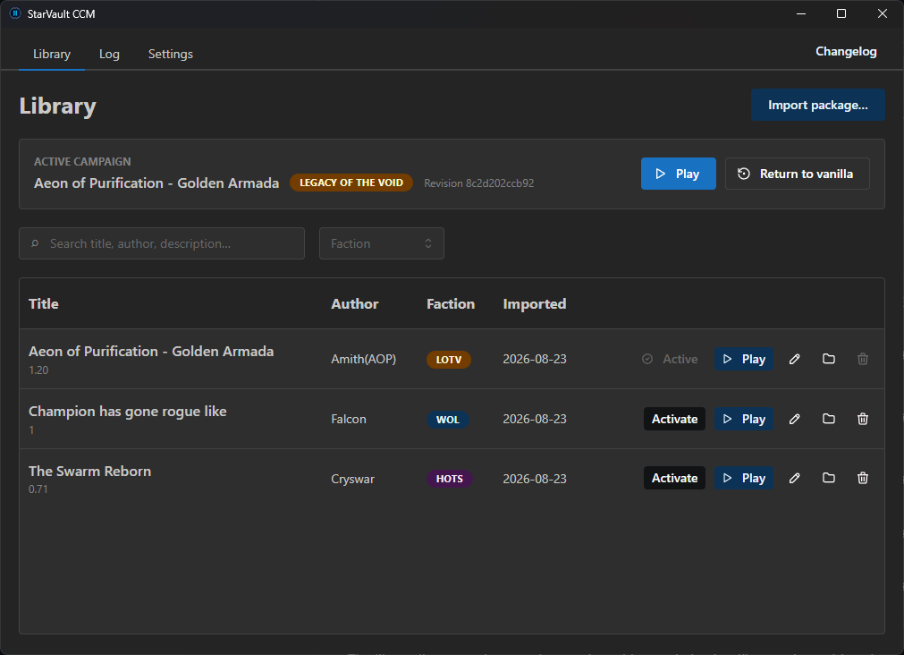

StarVault CCM
A successor to 7Ace's CCM.
Keep one custom campaign active, switch back to vanilla when you are done, and launch through Battle.net from the same Library screen.
This is alpha software. If a campaign fails to import or recover, report it or ping me on Discord with the operation log. Review the log before sharing it because it contains local file paths.

What it does
- One active campaign. Library shows exactly what is active and provides a clear Return to vanilla action.
- Flexible imports.The importer handles common wrapper folders and nested game layouts, and shows the detected faction before it writes the package. It also supports many more layout than the CCMv1.
- Separate Activate and Play actions. Activate prepares the campaign without launching the game. Play activates only when needed, then starts StarCraft II.
- Recoverable switching. If any error occur during any step, the folder is returned to a pristine state.
- Standalone Mod files stay usable. Matching files are left in place. If an archive doesn't bundle a given mod, you can provide it manually.
- Optional save isolation. Let's you separate your saves between different mod without confusion and bookkeeping.
- Import from SC2CCM. StarVault can copy campaigns from an existing SC2CCM setup without changing the originals.
- Signed updates. Official releases are automatically installed.